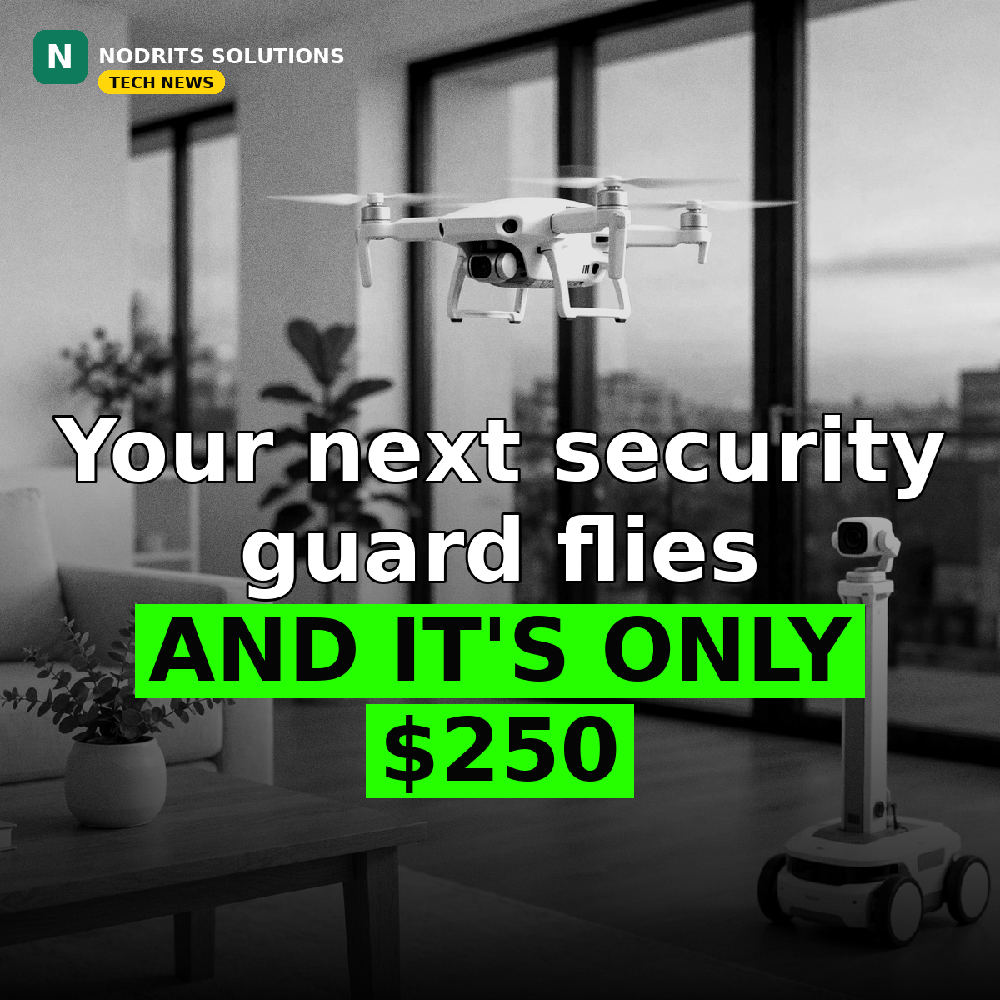

Ring's New Security Guard Flies — a $250 Drone and a $1,000 Patrol Robot

Your next security guard flies. On November 10, 2026, Amazon's Ring launched Ring Robotics, a new line of autonomous security devices: a $249.99 flying indoor camera for homes and a $999.99 wheeled patrol robot for businesses.
What happened
The Ring Drone Cam is a compact indoor drone that launches from a charging dock, where its camera stays off until it is sent out — on a schedule, on demand, or automatically when another Ring device is triggered. It flies preset routes to investigate, recording 2K video with a 148-degree field of view and 360-degree rotation, for up to eight minutes before returning to its dock. It is scheduled to ship in the US on January 27, 2027, for $249.99 — but Ring is only taking email sign-ups for now, because the drone has not yet received required FCC authorization and cannot be offered for sale until it does. The Ring Rover Cam is a wheeled patrol robot built for businesses, with a telescoping periscope camera mast that can see over counters and shelves, up to 4K video while moving, a siren, light tower and two-way audio, and about 30 minutes of operation per charge. It is available for preorder now and ships December 16, 2026, for $999.99. Both devices run on Ring's AI Pilot system, which combines cameras, vision models, on-device sensors and cloud processing to map spaces, pick patrol points and navigate around obstacles. Scheduled patrols and reviewing recorded video require a Ring Protect subscription. The drone is a second attempt: Ring first previewed an indoor flying camera, the Always Home Cam, in 2020 at the same $249.99 price. The Rover is a rebuilt version of Amazon's Astro robot, whose business version cost $2,349.99 and was discontinued about a year later.
Why it matters
Security cameras are learning to move. A fixed camera watches one corner; a drone or a patrol robot can go look at the thing that actually triggered the alarm. That is a real shift — from passive recording to a device that investigates. But the fine print matters: eight minutes of flight, a subscription for scheduled patrols, and a drone that cannot legally be sold yet. Ring is selling the future of home security before the paperwork and the battery catch up.
What it means for you
For homeowners, a flying camera is only as useful as its eight-minute flight and the subscription behind it — check the total cost, not just the $250 tag. For businesses, the Rover is the more practical of the two: a patrol robot that can check a warehouse after hours without a guard on site. And for anyone selling security or smart-home services, mobile cameras are a new category to learn — the pitch is no longer 'we install cameras', it is 'we patrol your space'.
The Nodrits take
Ring's security camera now flies to investigate — and a $1,000 robot patrols your business. Is a flying guard the future of home security, or a privacy line that should not be crossed? Tell us in the comments on today's post.
Need a website, SaaS product or AI workflow built right?
Nodrits Solutions designs, develops and automates for businesses in Pakistan, the USA, UK, UAE and Saudi Arabia.
Talk to Nodrits →Sources: Reuters (November 10, 2026); GeekWire (November 10, 2026); The Verge (November 10, 2026). The January 27, 2027 ship date is subject to FCC authorization, which Ring says has not yet been received; flight-time and runtime figures are Ring's stated specifications.. Published November 11, 2026.